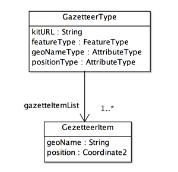

Gazetteer Designer
Introduction
Most atlases and travel guide books have geographic index at the end of them. The page and location of geographic object can be found by a combination of the name and the index code. Such a combination is called geographic identifier. Geographic index is a set of geographic identifiers. Gazetteer is a similar concept of geographic index . Gazetteer also means geographic name dictionary to explain the geographic objects in the target area. Gazetteer works as a discrete spatial reference system. Spatial referencing by geographic identifier is introduced in the lecture slide ’09 Reference systems’.
Gazetteer designer enables to design gazetteer by assigning geographical name and geometry as attributes of a feature. The students can find a feature on the map by the selection of geographic name listed in the gazetteer.
Gazetteer Schema
Gezetteer schema is a formal model of gazetteer. It consists of GazetteerType class and GazetteerItem class.

Figure 1. Structure of gazetteer
CLASSES
GazetteerType
This is a header of gazetteer. It has four attributes. KitURL is a resource location of the kit. FeatureType is a type of feature defined in the application scehma. LocationType is a feature attribute of geographic name. PositionType is a geometric attriute of the feature.
GazetteerItem
This is an index of a feature instance. geoName is a geographic id (name, textual identifier, etc.) of the feature, and position is a center coordinate of the geometric attribute.
ROLL NAMES
gazetteerItemList
A list of gazetteer items. this is the geographic index.
Gazetteer Designer
Figure 2. Gazetteer designer page
FIELDS
Kit
A name of the target kit file for the geospatial index.
Gazetteer
A file name of the gazetteer.
FeatureTypes
A name of the feature type selected on the drop down list.
Attributes
An attribute list of the selected feature type.
Geographic name
Selected feature identifier is displayed in this field.
Position
Selected geometry is displayed in this field.
BUTTONS
open (kit)
open a kit to create a gazetteer.
open (gazetteer)
open a gazetteer already created.
save (gazetteer)
save a created gazetteer.
geographic name
Before the selection of geographic name on the list of attributes, click this radio button.
Position
Before the selection of position on the list of attributes, click this radio button.
日本語
今あなたが読んでいるドキュメントが表示されます．
English
You can read the tutorial written in English.